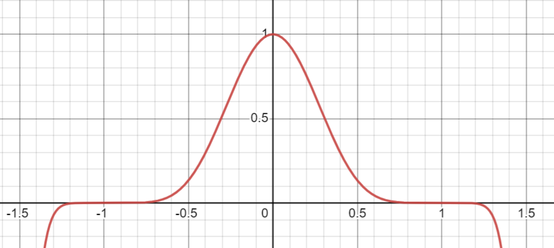

Определение: (второй интеграл Эйлера)
\[B(\alpha, \beta) = \displaystyle\int\limits_0^1 t^{\alpha - 1}(1 - t)^{\beta - 1}dt, \,\,\,\, \alpha > 0, \,\,\,\, \beta > 0\]
Утверждение: \[B(\alpha, \beta) = B(\beta, \alpha)\]
Доказательство: \(t = 1 - x \,\,\,\,\blacksquare\)
Теорема: \[B(\alpha + 1, \beta) = \frac{\alpha}{\alpha + \beta}\cdot B(\alpha, \beta)\]
Доказательство: по частям
Теорема: (связь бета и гамма-функций)
\[B(\alpha, \beta) = \frac{\Gamma(\alpha)\cdot \Gamma(\beta)}{\Gamma(\alpha + \beta)}\]
Доказательство:
Пусть \(t = \frac{1}{1 + x} \implies 1 - t = \frac{x}{1 + x}\) и \(dt = -\frac{dx}{1 + x}^2\).
\[B(\alpha, \beta) = \displaystyle\int\limits_0^1 t^{\alpha - 1}(1 - t)^{\beta - 1}dt = \displaystyle\int\limits_0^{+\infty} \frac{x^{\beta - 1}}{(1 + x)^{\alpha + \beta}}dx\]
Делаем замену \(x = (t + 1)y\) в \(\Gamma(\alpha + \beta)\). Получим \(\Gamma(\alpha + \beta) = \displaystyle\int\limits_0^{+\infty} (t + 1)^{\alpha + \beta}\cdot y^{\alpha + \beta - 1}e^{-(t + 1)y}dy\).
\[B(\alpha, \beta)\cdot \Gamma(\alpha + \beta) = \displaystyle\int\limits_0^{+\infty} \frac{x^{\beta - 1}}{(1 + x)^{\alpha + \beta}}\Gamma(\alpha + \beta)dx = \displaystyle\int\limits_0^{+\infty} \frac{x^{\beta - 1}}{(1 + x)^{\alpha + \beta}}\left(\displaystyle\int\limits_0^{+\infty} (t + 1)^{\alpha + \beta}\cdot y^{\alpha + \beta - 1}e^{-(t + 1)y}dy\right)dx=\] \[=\displaystyle\int\limits_0^{+\infty} y^{\alpha - 1}e^{-y}\left(\displaystyle\int\limits_0^{+\infty} (ty)^{\beta - 1}e^{-ty}d(ty)\right)dy = \Gamma(\beta)\cdot \Gamma(\alpha) \,\,\,\,\blacksquare\]
Тут используется теорема о изменении порядка интегралов, а для нее необходима неотрицательность и непрерывность, поэтому рассуждения выше для \(\alpha > 1\) и \(\beta > 1\).
Теорема: (Вейерштрасса о приближении многочленами) Пусть \(f(x) \in C[a, b] \,\,\,\, \exists \{P_n(x)\}_{n = 1}, \,\,\,\, P_n\) – многочлены, такие что \(P_n(x) \overset{[a, b]}{\rightrightarrows} f(x)\).
Доказательство:
Без ограничения общности пусть \(f(x) \in C[0, 1]\) и \(f(0) = f(1) = 0\), так как отрезок \([a, b]\) можно перевести в отрезок \([0, 1]\) линейной заменой, то есть многочлен останется многочленом. Пусть \(f(x) \equiv 0, \,\,\,\, x \not\in [0, 1] \implies f(x) \in C(\mathbb{R})\).
Пусть \(\{c_n\}_{n = 1}^{\infty}: \,\,\,\, c_n \displaystyle\int\limits_{-1}^1 (1 - x^2)^ndx = 1\).

Оценим \(c_n:\) \(1 = c_n 2 \displaystyle\int\limits_0^1 (1 - x^2)^ndx \geqslant 2c_n \displaystyle\int\limits_0^{\frac1{\sqrt{n}}} (1 - x^2)^n dx \geqslant 2c_n \displaystyle\int\limits_0^{\frac1{\sqrt{n}}} (1 - nx^2) dx=\) \(= 2 c_n \left(\frac1{\sqrt{n}} - \frac{1}{3\sqrt{n}}\right) = \frac43\cdot \frac{c_n}{\sqrt{n}} > \frac{c_n}{\sqrt{n}} \implies c_n < \sqrt{n}\). 1
\[\forall \delta > 0 \,\,\,\, c_n(1- x^2)^n \leqslant c_n(1 - \delta^2)^n \overset{n \to \infty}{\to} 0 \implies c_n(1- x^2)^n \overset{[-1,-\delta]\cup[\delta, 1]}{\rightrightarrows} 0\]
\[f_n(x) = c_n\cdot\displaystyle\int\limits_{-1}^1 f(x + t)(1- t^2)^ndt\] \[|f_n(x) - f(x)| = \left|c_n\cdot\displaystyle\int\limits_{-1}^1 f(x + t)(1- t^2)^ndt - f(x)c_n\displaystyle\int\limits_{-1}^1 (1 - x^2)^ndx\right|=\] \[= c_n\left|\displaystyle\int\limits_{-1}^1 (1- t^2)^n (f(x + t) - f(x))\right| \leqslant c_n\displaystyle\int\limits_{-1}^{-\delta} (1- t^2)^n |f(x + t) - f(x)|dt+\] \[+ c_n\displaystyle\int\limits_{\delta}^1 (1- t^2)^n |f(x + t) - f(x)|dt+\] \[+ c_n \displaystyle\int\limits_{-\delta}^{\delta} (1- t^2)^n |f(x + t) - f(x)|dt \leqslant \varepsilon + 2M\varepsilon \implies\] \[\implies f_n(x) \overset{[0, 1]}{\rightrightarrows}f(x)\] \[f_n(x) = c_n\cdot \displaystyle\int\limits_x^{1-x} f(x + t)(1-t^2)^ndt \overset{\tau = x+t}{=} c_n\cdot \displaystyle\int\limits_0^1 f(\tau)(1 - (x - \tau)^2)^nd\tau\]
Это назвается ядро сингулярного разложения.↩︎